✧
Chants
DISCOGRAPHY
✧
Ceremonies
LIVE SHOWS
✧
Relics
MERCH
‹ RETURN TO THE GATE
Chants
‹ RETURN TO THE GATE
Ceremonies
SÜGIS EXTREME FEST VOL. 4
TALLINN · ESTONIA
11–12 DECEMBER 2026
‹ RETURN TO THE GATE
Relics
Vinyls, CD, Tapes